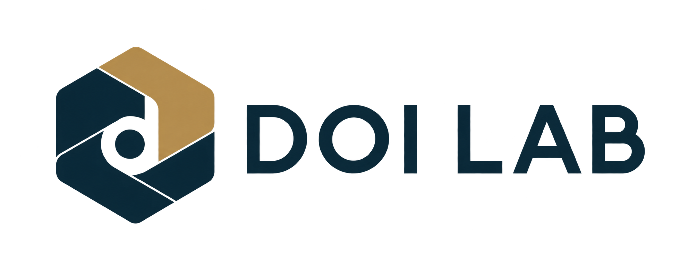
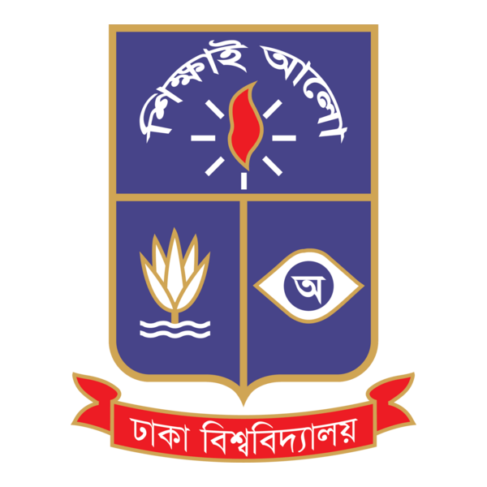
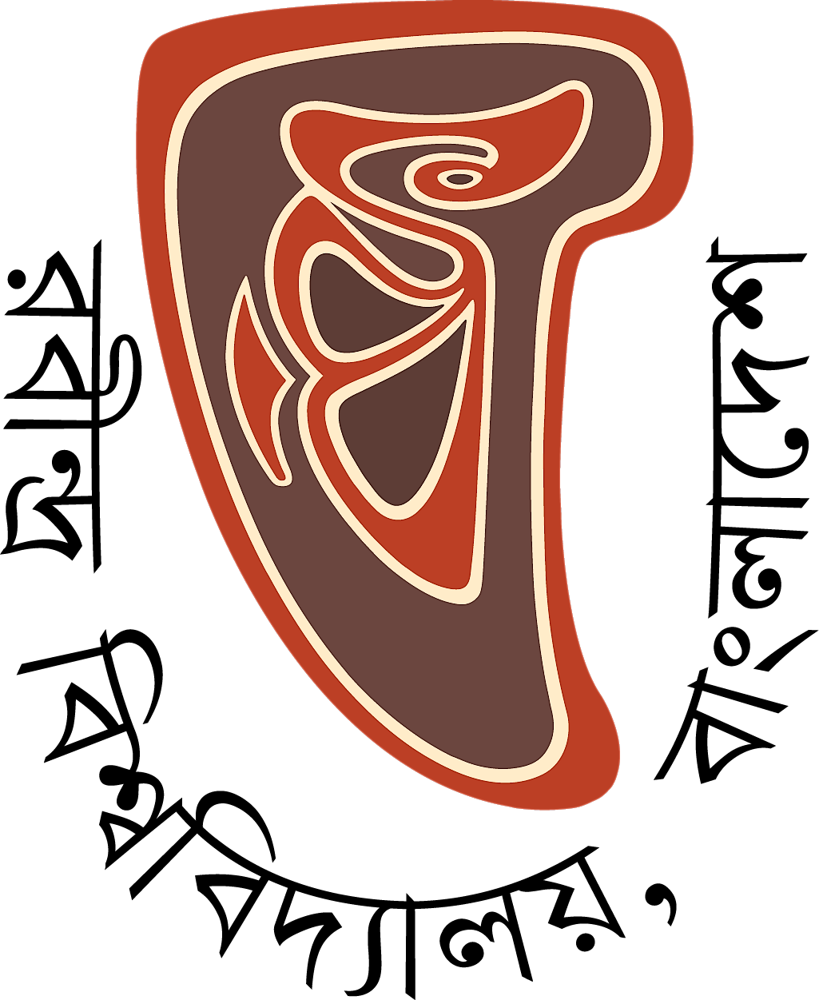

Journal websites
A dedicated online home for your journal, shaped around your institutional identity and publishing needs.
Discuss a journal website
বাংলাDOI Lab is a dependable partner for journal, publication and academic websites. We help institutions build their online presence and connect scholarly articles through DOI support.
SELECTED
INSTITUTIONS

University of DhakaPersian Language and Literature
Rabindra UniversityLokabhabnaBhabanagara FoundationInternational Journal of Bengal StudiesNazrul Research CentreUniversity of DhakaNazrul Research JournalUniversity of DhakaPurposeful websites and practical DOI assistance for the people and institutions advancing scholarly publishing.
A dedicated online home for your journal, shaped around your institutional identity and publishing needs.
Discuss a journal websiteConsidered websites for publications, academic departments and institutions to present their work with clarity.
Discuss an academic websiteSupport with the DOI registration process and technical assistance to connect assigned DOIs with journal articles.
Discuss DOI supportA closer look at the websites we have developed for academic journals and publications.
Explore the journal and publication websites developed for these institutions.
We discuss your institution, your audience and the publishing services you need.
We agree on the website structure, content requirements and any DOI assistance.
We develop the agreed website and assist with DOI integration where required.
Tell us about your journal, publication or academic website. Call or email us to begin a conversation.
CALL US
01521208609
EMAIL US
doilaborg@gmail.com
Prefer to prepare a brief? Download it using this form and email it to us. This form does not send your information.